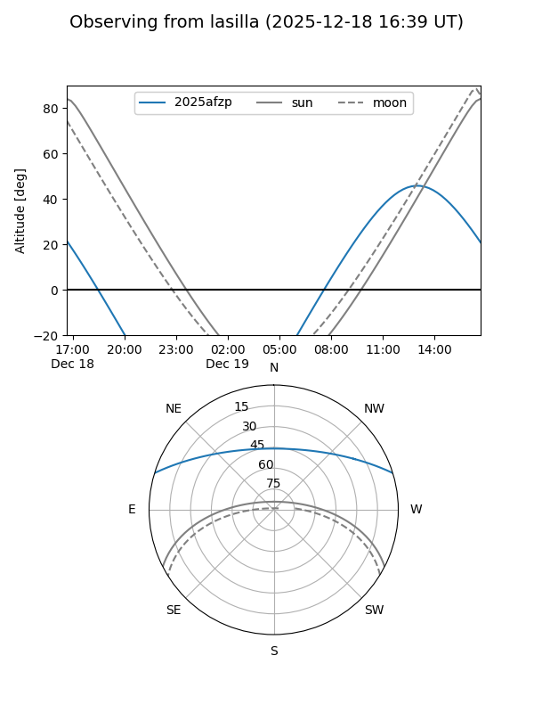
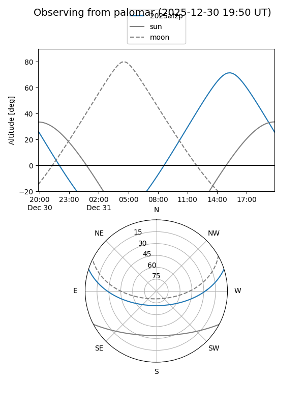
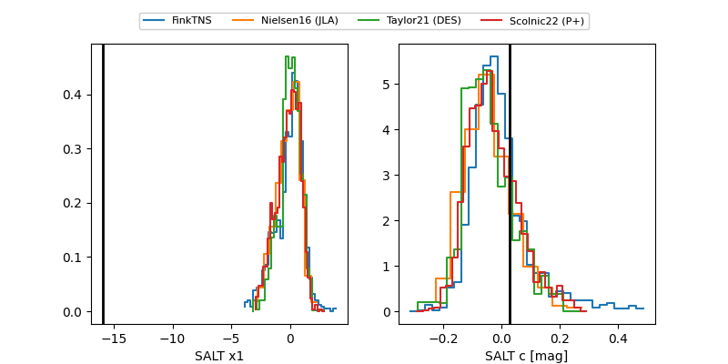

2025afzp
Target 2025afzp at 2025-12-31 18:00
Aliases and brokers:
FINK: link
Lasair: link
ALeRCE: link
TNS: link
YSE: link
alt names
ZTF25acgcusj (ztf,fink_ztf)
2025afzp (tns,yse)
Coordinates:
equatorial (ra, dec) = 212.2615,+15.01103
equatorial (HMS+DMS) = 14:09:02.77,+15:00:39.72
galactic (l, b) = (2.9784,+68.26447)
Flags:
Photometry:
last ztfr=18.98
3 ztfr detections
Lightcurve

Visibility


Additional plots
